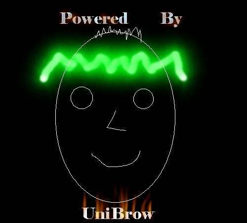

- H4ck3d -
This Hack was.....

You know who was here....
I wish i could be l33t as Mercid....
Using frontpage extensions is futile.... The level of security on Worldpath makes me SICK.
Blame Coolio.
Hole: administrators.pwd
# -FrontPage-
wards:Iaz9WIxirwSqA
Fix it mercid.... you l33to b0rit0
Admin: You suck.... index is index.bak Nothing was h4rm3d, j00r w3lcome.
No animals were harmed. (tear)
Shouts: Clyx, R0e, WSG_GMONEY
5/29/00
Happy 18th Birthday Bro......